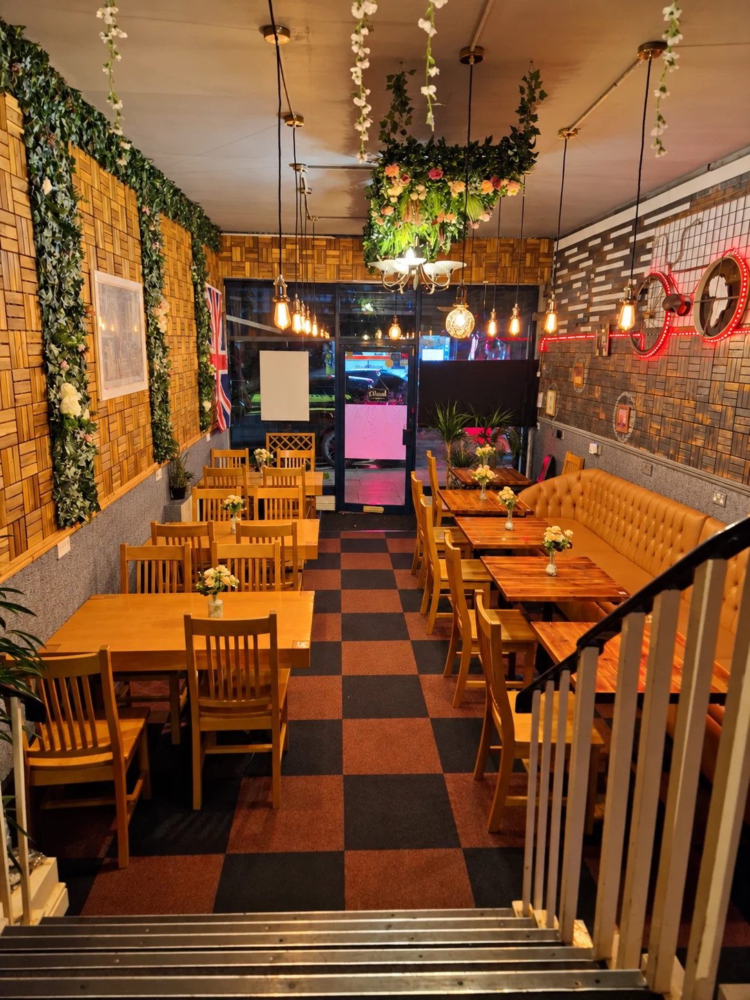
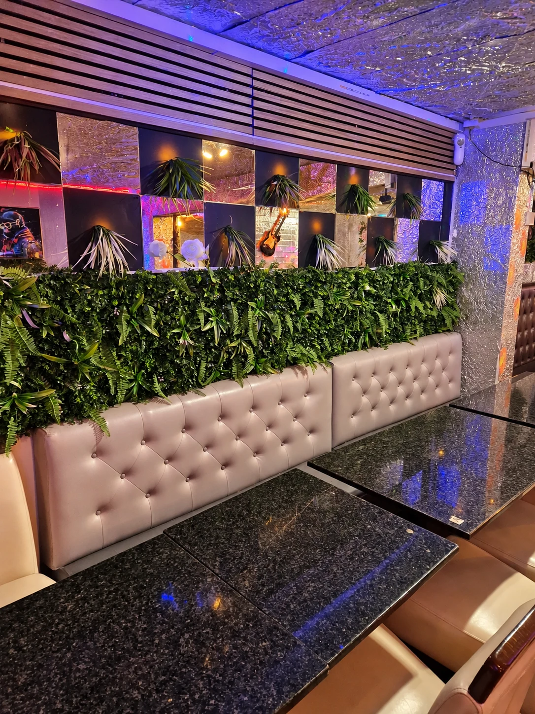
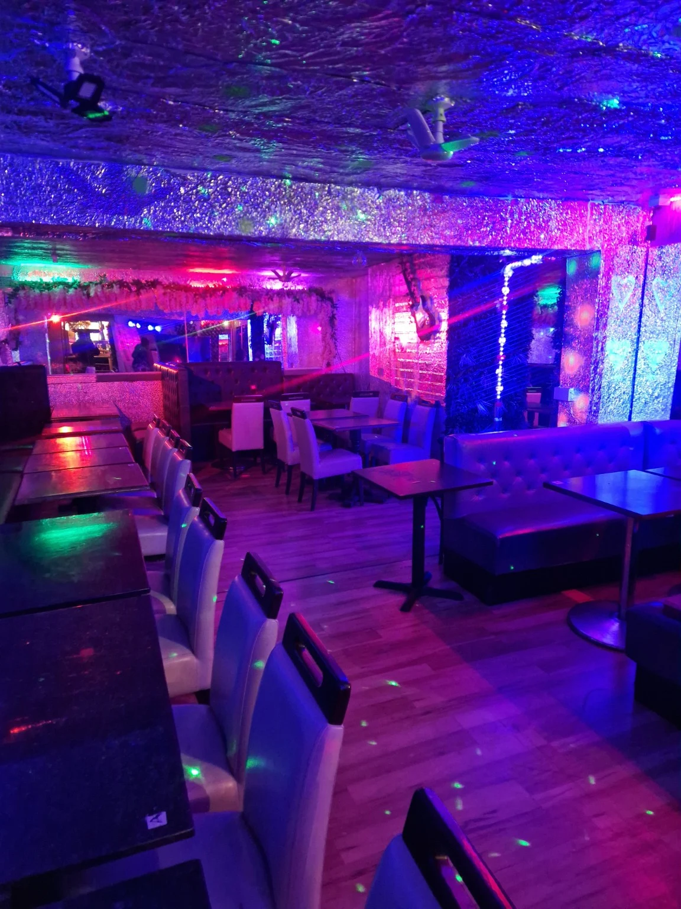
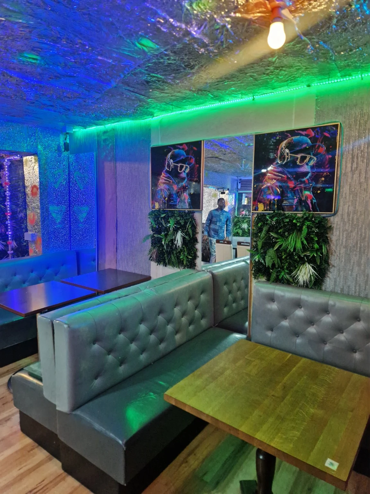
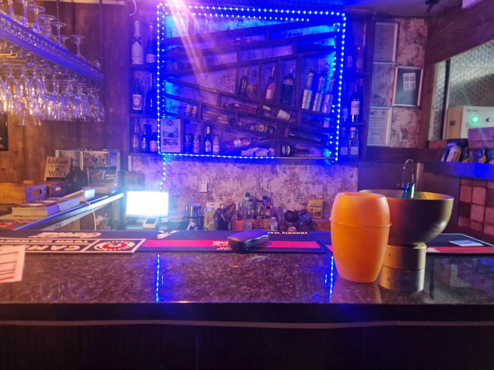

THE RESTAURANT & EVENT SPACE
Come for the food.
Stay for the company.
Take a look inside Tumba Grill on Streatham High Road, and talk to us about your next occasion.
STEP INSIDE TUMBA GRILL
Get a feel for the place.
From a table in the dining room to an evening in the lounge, take a look around before your visit. Select a photo to see the full view.











MAKE IT YOUR OCCASION
A space for
your next gathering.
Planning a birthday, a celebration or a get-together? Ask the Tumba Grill team about hiring the space for your event.
Let us know your preferred date, approximate guest numbers and what you have in mind. The team can talk you through availability, seating arrangements, food and drinks, and hire pricing.
All arrangements and bookings are confirmed directly with the restaurant.
Call 07404 053691